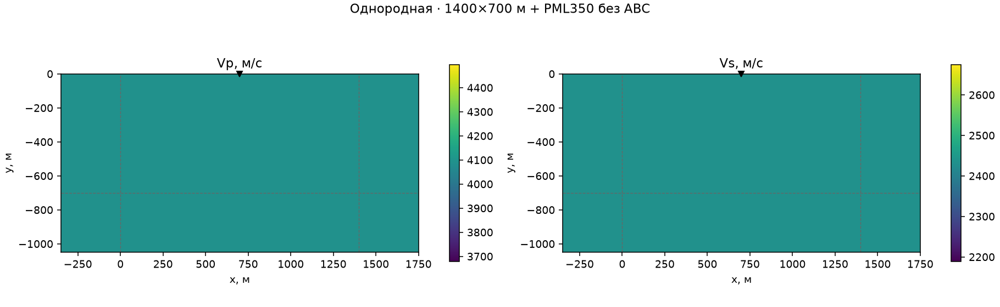
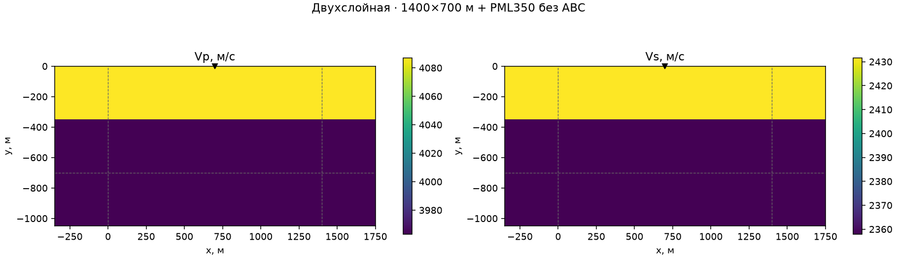
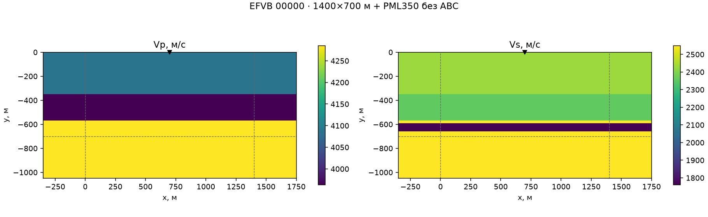
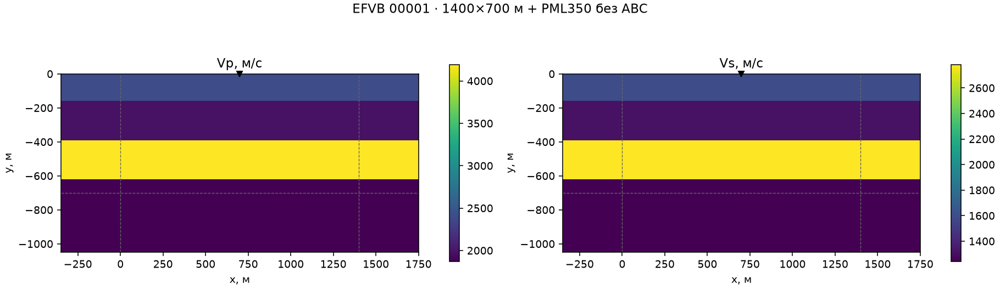
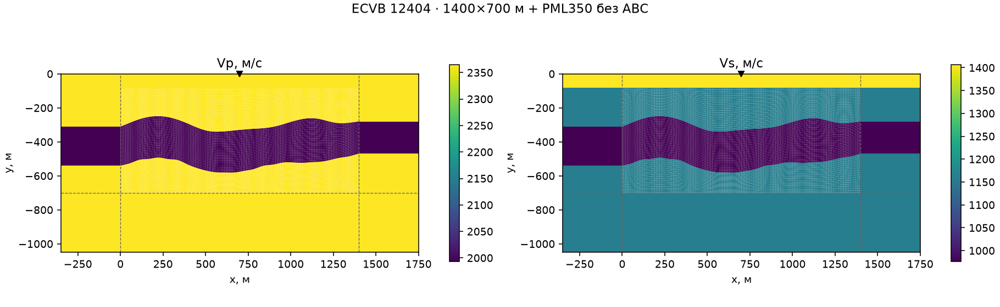
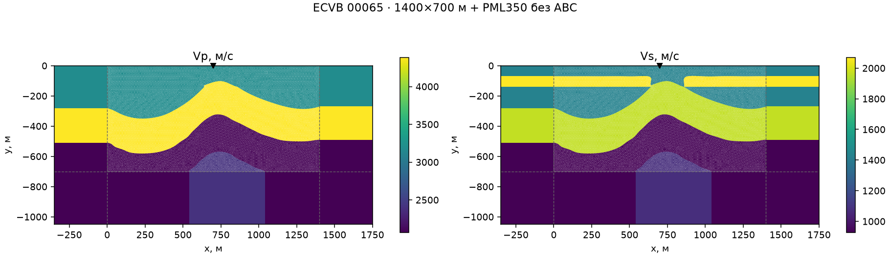

Однородная

Линейная ±1e−10 м/с · Знаковая логарифмическая · Сейсмограммы всех семи источников одним PNG
Шесть геометрий, семь источников. 1400×700 м, p6/h≈10 м, Рикер30Гц вниз1Н/м, t0=0.05с, 1с. PML350м по трём сторонам, квадратичный максимум173.08861с⁻¹, без ABC и массового демпфирования. Полная область2100×1050м. β=1/27, γ=0.5, native CFL0.8, tact_dt0.001с.
Источники x175,350,525,700,875,1050,1225м считаются раздельно на общей геометрии; их поля не складываются. ECVB — сглаженные границы, x растянут вдвое. Материалы плоскопараллельно продолжены в PML. Регистрируются Vx/Vy:21 полный кадр через0.05с и1001 отсчёт во всех1261 узле верха, включая PML. Пунктир отмечает основную область. Видео5fps, замедление4×.
Полная постановка · Реферат и ограничения
| Модель | Узлы | Элементы | dt, с | Шаги | Run, с |
|---|---|---|---|---|---|
| homogeneous | 795691 | 22050 | 0.00011111111 | 9000 | 17.09 |
| two_layer | 795691 | 22050 | 0.00011111111 | 9000 | 17.05 |
| EFVB00000 | 795691 | 22050 | 0.0001 | 10000 | 19.07 |
| EFVB00001 | 795691 | 22050 | 0.00011111111 | 9000 | 17.07 |
| ECVB12404 | 795691 | 22050 | 0.00014285714 | 7000 | 13.56 |
| ECVB00065 | 1099615 | 30492 | 2.5e-05 | 40000 | 93.19 |
Run включает приёмники и ожидание асинхронных очередей; один запуск на геометрию, это не медианный бенчмарк. Проверены конечность состояния/PML и точное совпадение поверхности с полями. Эта серия не доказывает сеточную сходимость для всех материалов датасета.

Линейная ±1e−10 м/с · Знаковая логарифмическая · Сейсмограммы всех семи источников одним PNG

Линейная ±1e−10 м/с · Знаковая логарифмическая · Сейсмограммы всех семи источников одним PNG

Линейная ±1e−10 м/с · Знаковая логарифмическая · Сейсмограммы всех семи источников одним PNG

Линейная ±1e−10 м/с · Знаковая логарифмическая · Сейсмограммы всех семи источников одним PNG

Линейная ±1e−10 м/с · Знаковая логарифмическая · Сейсмограммы всех семи источников одним PNG

Линейная ±1e−10 м/с · Знаковая логарифмическая · Сейсмограммы всех семи источников одним PNG